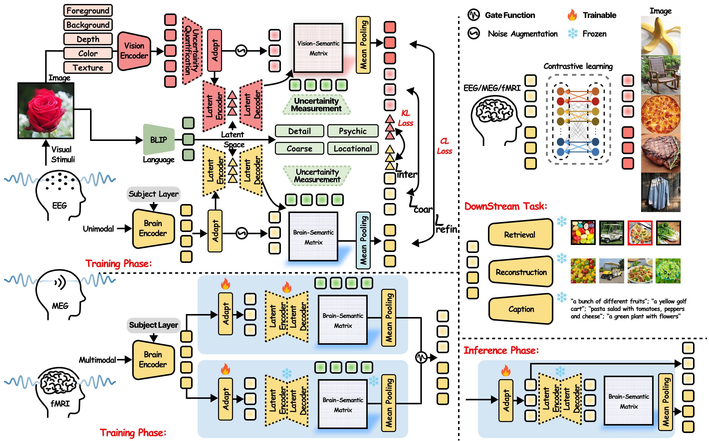
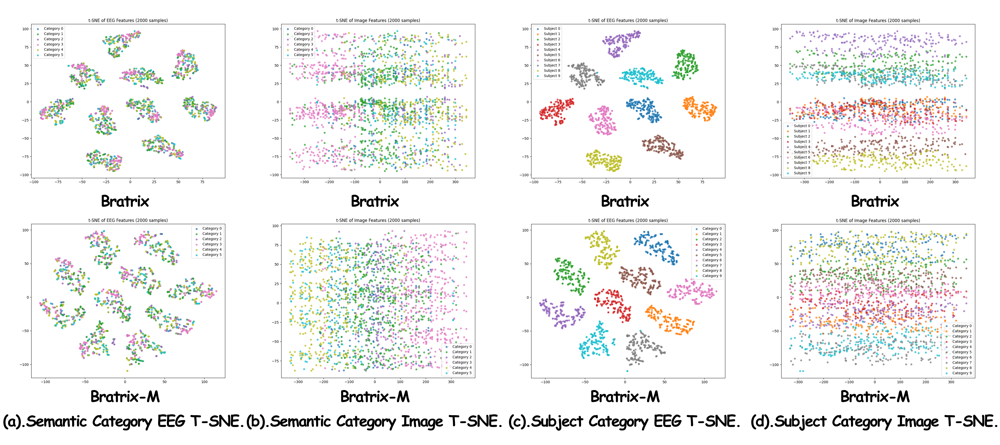
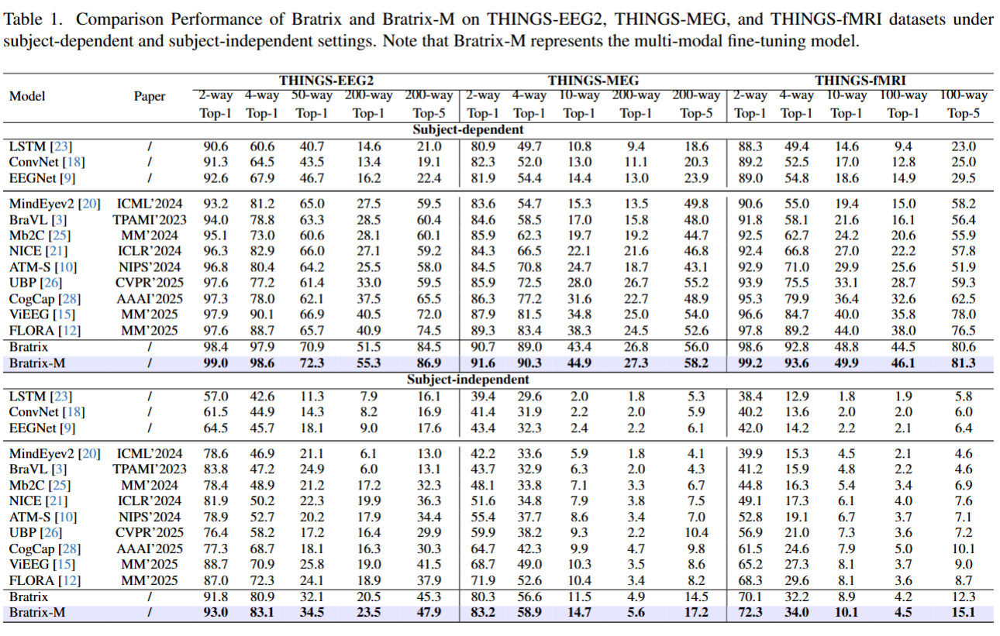
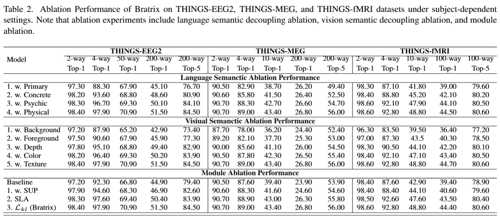
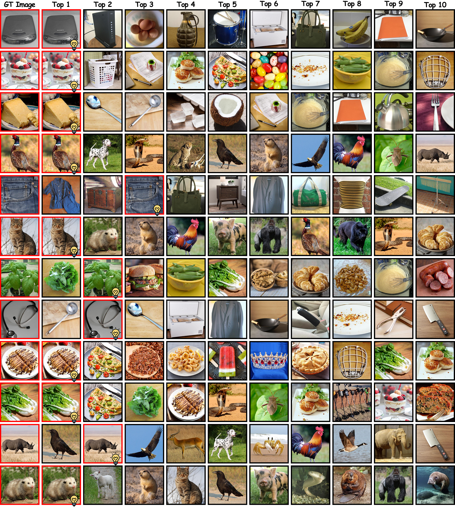
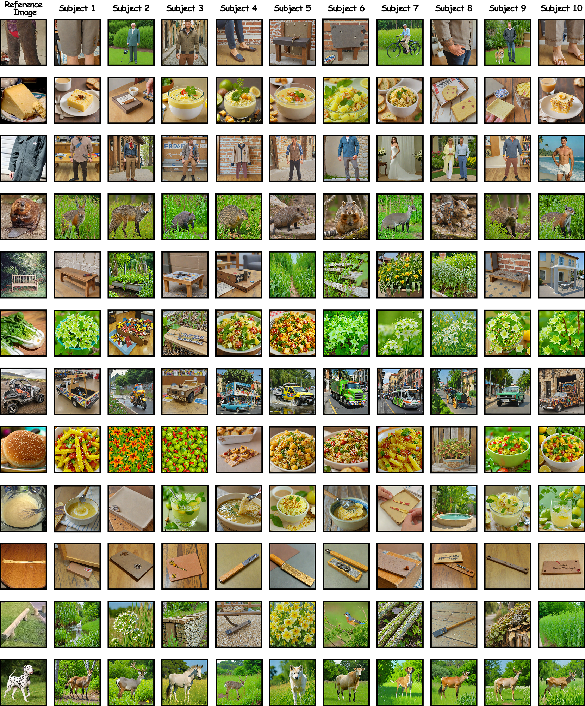
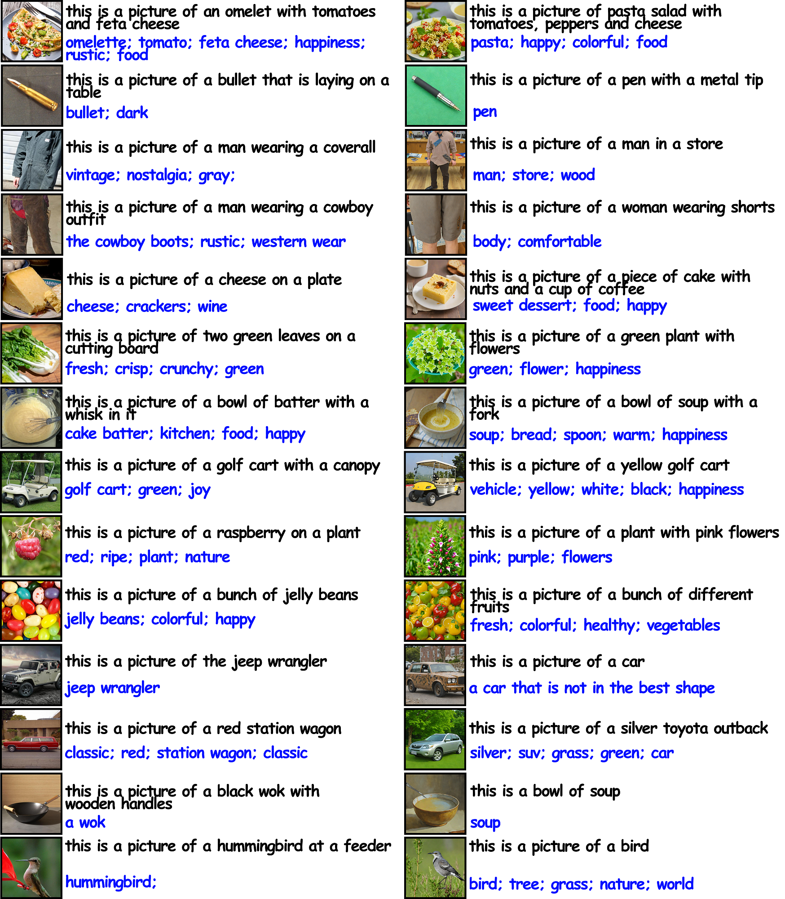

Recent advances in multimodal Reward Models (RMs) have shown significant promise in delivering reward signals to align vision models with human preferences. However, current RMs are generally restricted to providing direct responses or engaging in shallow reasoning processes with limited depth, often leading to inaccurate reward signals. We posit that incorporating explicit long chains of thought (CoT) into the reward reasoning process can significantly strengthen their reliability and robustness. Furthermore, we believe that once RMs internalize CoT reasoning, their direct response accuracy can also be improved through implicit reasoning capabilities. To this end, this paper proposes UnifiedReward-Think, the first unified multimodal CoT-based reward model, capable of multi-dimensional, step-by-step long-chain reasoning for both visual understanding and generation reward tasks. Specifically, we adopt an exploration-driven reinforcement fine-tuning approach to elicit and incentivize the model's latent complex reasoning ability: (1) We first use a small amount of image generation preference data to distill the reasoning process of GPT-4o, which is then used for the model's cold start to learn the format and structure of CoT reasoning. (2) Subsequently, by leveraging the model's prior knowledge and generalization capabilities, we prepare large-scale unified multimodal preference data to elicit the model's reasoning process across various vision tasks. During this phase, correct reasoning outputs are retained for rejection sampling to refine the model (3) while incorrect predicted samples are finally used for Group Relative Policy Optimization (GRPO) based reinforcement fine-tuning, enabling the model to explore diverse reasoning paths and optimize for correct and robust solutions. Extensive experiments confirm that incorporating long CoT reasoning significantly enhances the accuracy of reward signals. Notably, after mastering CoT reasoning, the model exhibits implicit reasoning capabilities, allowing it to surpass existing baselines even without explicit reasoning traces.

🌟🌟🌟 Overall Framework of Bratrix. Bratrix comprises Vision semantic decoupling pipeline, a Brain encoder pipeline, a language semantic decoupling pipeline, and a language-anchored visual-brain alignment.
🌟🌟🌟 There are totally four stages in this framework: single-modal per-training phase, multi-modal fine-tuning phase, inference phase, and downstream task phase.







@article{Bratrix,
title={Unveiling Deep Semantic Uncertainty Perception for Language-Anchored Multi-modal Vision-Brain Alignment},
author={Zehui Feng, Cuntai Guan, Ting Han},
journal={arXiv preprint arXiv:},
year={2025}
}